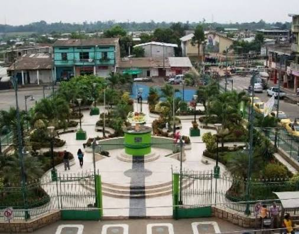
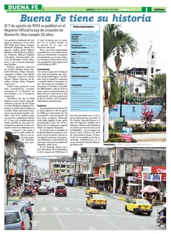
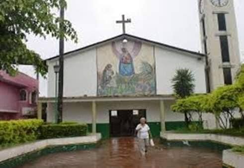
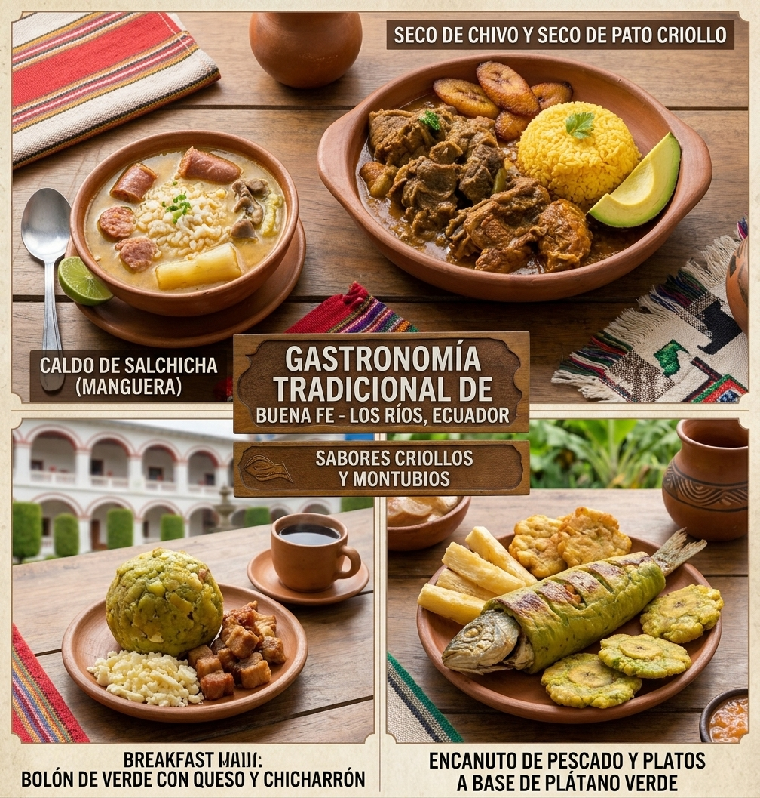
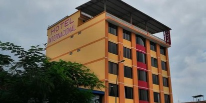
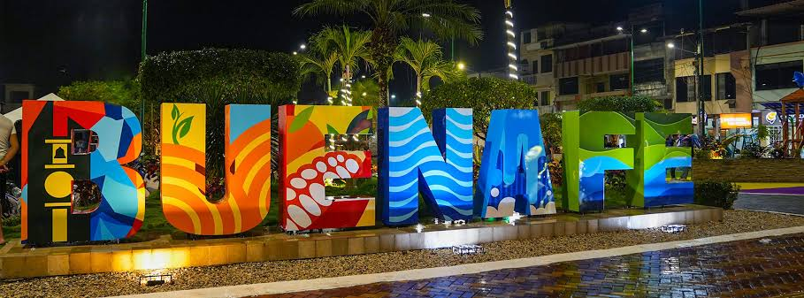

Bienvenido a la página oficial del cantón San Jacinto de Buena Fe, una tierra pujante y agrícola, conocida por su gran producción bananera, cacaotera y su comercio dinámico en el norte de la provincia de Los Ríos.

Originalmente fue un recinto que congregó a colonos atraídos por la riqueza de sus suelos. Tras un intenso proceso de cantonización impulsado por sus habitantes, Buena Fe fue oficialmente cantonizado el 7 de agosto de 1992.

El cantón cuenta con división territorial urbana y rural:

La culinaria de Buena Fe resalta por sus sabores criollos y montubios propios de la zona norte de Los Ríos:
Destacan sus hermosos balnearios de agua dulce a lo largo de sus ríos, la calidez de su gente, haciendas agroturísticas y sus pintorescos paisajes naturales rodeados de extensa vegetación tropical.

El cantón ofrece hostales, residencias y hoteles cómodos para los visitantes y turistas que llegan por motivos de comercio o turismo.
Alcalde: Diana Anchundia

Alberga a una población que supera los 65.000 habitantes, caracterizándose por ser una ciudad joven, comercial y de constante crecimiento demográfico.
Se localiza en el extremo norte de la provincia de Los Ríos, limitando con la provincia de Santo Domingo de los Tsáchilas y los cantones Quevedo y Valencia.